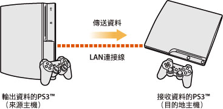
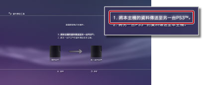
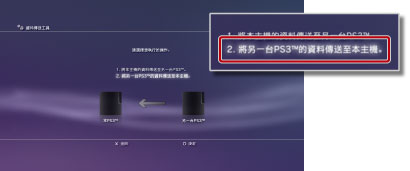

資料傳送工具
可使用LAN連接線，將PS3™主機儲存空間保存的資料傳送（複製或移動）至另一台PS3™的主機儲存空間。

重要
- 使用此機能時，接收資料的主機儲存空間（目的地主機）所保存的資料會被全部刪除。
- 刪除的資料永遠無法還原，請注意不要錯誤刪除重要的資料。本公司對資料的遺失／毀損概不承擔任何責任。
- 部份資料可能無法傳送，詳情請閱覽此。
事前準備
開始傳送資料前，請先進行以下準備。
1. |
將2台PS3™的系統軟件更新至最新版本。 |
|---|---|
2. |
操作要輸出資料的PS3™進行準備。 |
- 若未建立Sony Entertainment Network帳戶，需先建立帳戶。
- - 選擇
 （PlayStation™Network）的
（PlayStation™Network）的  （登入）。請遵循畫面指示建立帳戶。
（登入）。請遵循畫面指示建立帳戶。 - 若要傳送在PlayStation®Store購買的內容，需先解除機器驗證。
- - 選擇（PlayStation™Network）＞
 （帳戶管理）＞
（帳戶管理）＞ （機器驗證）。
（機器驗證）。 - 若要傳送獎盃的資料，需先將資料保存至PSNSM的伺服器。
- - 在登入PSNSM的狀態下，選擇（PlayStation™Network）＞
 （Trophy（獎盃）收藏）。
（Trophy（獎盃）收藏）。 - 若要在接收資料的PS3™使用LittleBigPlanet™的遊戲資料，需先將您的個人資料和作成的關卡備份至遊戲的保存資料。
重要
傳送資料時若未建立帳戶，會出現以下限制事項。
- 可能無法在接收資料的PS3™上使用部份遊戲的保存資料。
- 使用傳送的保存資料遊玩遊戲時，無法獲得獎盃。
- 無法傳送獎盃的資料。
傳送資料
請先關閉2台PS3™的電源，再執行以下操作。可使用此機能傳送的資料，會被複製至接收資料的PS3™上。禁止複製的遊戲保存資料或內建著作權保護機能的內容，則會被移動至接收資料的PS3™上。
1. |
使用LAN連接線直接連接2台PS3™。 |
|---|---|
2. |
將2台PS3™連接至電視機。 |
3. |
啟動電視機的電源，然後再啟動2台PS3™的電源。 |
4. |
操作要輸出資料的PS3™，選擇 |
5. |
選擇 [1. 將本主機的資料傳送至另一台PS3™。]。  若未完成傳送前的準備，請遵循畫面顯示，正確執行操作。 |
6. |
進入資料傳送等候中的狀態時，將電視機的影像輸入變換為要接收資料的PS3™。 |
7. |
操作要接收資料的PS3™，選擇 |
8. |
選擇[2. 將另一台PS3™的資料傳送至本主機。]。  請遵循畫面指示，傳送資料。 |
 （設定）＞
（設定）＞ （主機設定）＞ [資料傳送工具]。
（主機設定）＞ [資料傳送工具]。提示
- 資料傳送完畢後，請再度在電視機顯示輸出資料的PS3™的畫面，然後選擇
 （使用者）的
（使用者）的 （關閉主機電源）關閉主機的電源。
（關閉主機電源）關閉主機的電源。 - 若持有在PlayStation®Store下載的內容，則需在傳送資料後，替接收資料的PS3™進行機器驗證。請使用擁有該內容的使用者登入，再選擇 （PlayStation™Network）＞（帳戶管理）＞（機器驗證）。
資料傳送工具的機能限制
部份資料無法使用資料傳送工具的機能傳送。亦可能會出現雖可傳送但無法播放的情況。
最新資訊請瀏覽各區域的官方網站。
- 主機儲存空間中保存的SingStar™樂曲資料
- 內建著作保護權的影像檔案（檔案類型為MGV和ETS）
- 支援DivX® VOD服務的影像檔案
- 安裝至主機儲存空間的PlayStation®2規格軟件
- - [Nobunaga's Ambition Online] 及 [Expansion Packs]
- - [FINAL FANTASY XI] 及 [Expansion Discs]
- - [SOCOM II: U.S. NAVY SEALs] 及 [ OPM* Issue 87, OPM* Issue 88, OPM* Issue 89, OPM* Issue 90內隨附的相關光碟] *
- - SOCOM 3: U.S. NAVY SEALs
- - SOCOM: U.S. NAVY SEALs Combined Assault
若要使用以下資料，需在傳送後正確執行操作。
- GripShift™
- - 資料傳送完畢後啟動遊戲，畫面會顯示錯誤訊息，無法遊玩遊戲。只需再度下載及安裝遊戲，即可正確啟動。
- Ghostbusters™、Ghostbusters™: The Video Game的保存資料
- - 資料傳送完畢後啟動遊戲，會無法正確辨識保存資料。只需結束遊玩，並再度啟動遊戲，即可使用保存資料。
| * |
Official PlayStation Magazine |
|---|
提示
遊戲軟件的銷售狀況因區域而異。